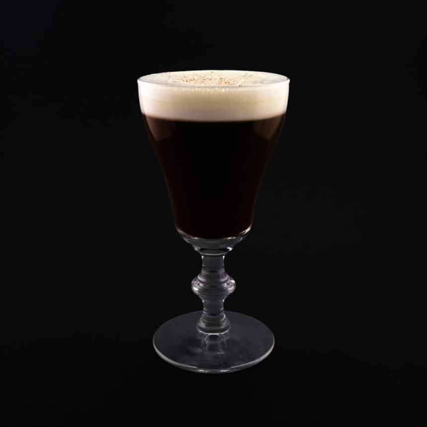

Irish Coffee

Ingredients
3 cl Irish Whiskey,
1-2 teaspoons Sugar,
9 cl Coffee and about
5 cl Cream.
1. Start by brewing some really good coffee
2. Boil up some water and pour it into the glass to heat it up
3. Prepare your cream. It's going to be lightly whisked,
which means it's supposed to be liquid but still fluffy
4. Remove the hot water from the glass before making the drink
7. Add your coffee. Leave about 1-1,5 cm of the glass to fit
the whipped cream
8. Stir so that the sugar dissolves
9. Carefully pour the cream with the help of a spoon so that it
sits like a layer on top of the drink
10. Garnish with some grated chocolate
11. Serve without straw. An Irish Coffee is best when consumed
through the cool cream
Front Page